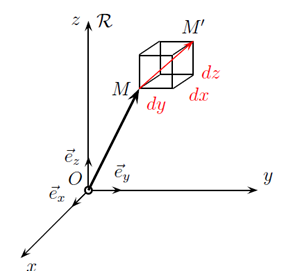
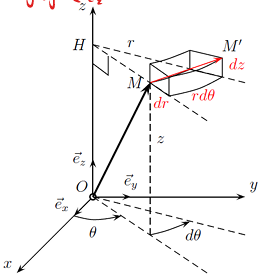
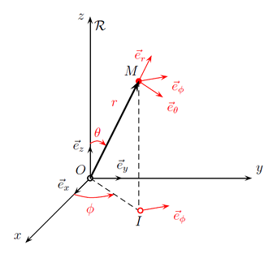
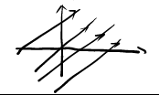
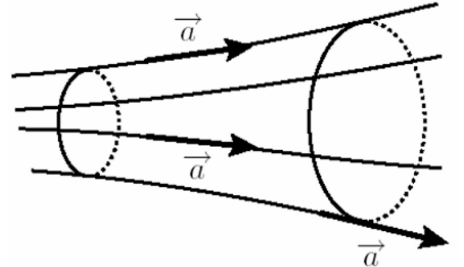

Analyse vectorielle¶
1.Référentiel et systèmes de coordonnées¶
1.1 Référentiel (参考系)¶
一个系统如何运动是由观察者决定的, 这是一个相对的概念, 所以我们会选择一个自身不发生改变的物体作为 参考系
地表参考系(le référentiel terrestre), 地心参考系(le référentiel géocentrique), 日心参考系(le référentiel héliocentrique), 这些都是参考系的例子
对于满足惯性定律(物体做匀直运动时合外力为零)的参考系, 我们称其为 惯性参考系 (référentiel galiléen ou référentiel inertiel)
为了描述物体在参考系中的运动, 我们会选择一个坐标系, 坐标系在参考系中相对静止
1.2 Coordonnées cartésiennes (笛卡尔坐标系)¶

点 \(M\) 在 \(t\) 时刻, 坐标系中的坐标为 \((x,y,z)\)
\((\vec{e_x},\vec{e_y},\vec{e_z})\) 是该坐标系的基底, 有如下性质:
- 三个向量两两正交
- \(||\vec{e_x}|| = ||\vec{e_y}|| = ||\vec{e_z}|| = 1\)
- \(\vec{e_z} = \vec{e_x} \wedge \vec{e_z}\)
那么:
- 点 \(M\) 的位置可以表示为 \(\vec{OM} = x\vec{e_x} + y\vec{e_y} + z\vec{e_z}\)
- 点 \(M\) 的微小位移可以表示为 \(\vec{dOM} = dx\vec{e_x} + dy\vec{e_y} + dz\vec{e_z}\)
- 点 \(M\) 的速度可以表示为 \(\vec{v} = \frac{\vec{dOM}}{dt} = \frac{dx}{dt}\vec{e_x} + \frac{dy}{dt}\vec{e_y} + \frac{dz}{dt}\vec{e_z} = \dot{x}\vec{e_x} + \dot{y}\vec{e_y} + \dot{z}\vec{e_z}\)
1.3 Coordonnées cylindriques (圆柱坐标系)¶

点 \(M\) 在坐标系中的坐标为 \((r,\theta,z)\), 其中, \(r\) 是 \(OM\) 投影在 \(Oxy\) 上的 \(HM\) 的长度, 角 \(\theta\) 是 \(x\) 轴与 \(HM\) 的夹角, \(z\) 是高度
\((\vec{e_r},\vec{e_\theta},\vec{e_z})\) 是该坐标系的基底, 有如下性质 :
- \(\vec{e_r} = \frac{\vec{HM}}{||\vec{HM}||} = \frac{\vec{HM}}{r}\)
- \(\vec{e_\theta}\) 与 \(\vec{e_r}, \vec{e_z}\) 分别正交
- 将 \(\vec{e_r}\) 和 \(\vec{e_\theta}\) 根据笛卡尔坐标系分解:
进而得出: \(d \vec{e_r} = d \theta \vec{e_\theta}\) (因为 \(\vec{e_r}\) 会随 \(M\) 位置改变而改变, 所以 \(d\vec{e_r}\) 不为零, 而对于基底中的 \(z\) 方向的分量, 因为 \(\vec{e_z}\) 不会发生改变, 所以有 \(d\vec{e_z} = 0\))
那么:
- 点 \(M\) 的微小位移可以表示为 \(\vec{dOM} = d(r\vec{e_r} + z\vec{e_z}) = dr\vec{e_r} + rd\vec{e_r} + dz\vec{e_z} = dr\vec{e_r} + rd\theta \vec{e_\theta} + dz\vec{e_z}\)
- 点 \(M\) 的速度可以表示为 \(\vec{v} = \frac{d\vec{OM}}{td} = \frac{dr}{dt}\vec{e_r} + r \frac{d\theta}{dt} \vec{e_\theta} + \frac{dz}{dt}\vec{e_z} = \dot{r}\vec{e_r} + r \dot{\theta} \vec{e_\theta} + \dot{z}\vec{e_z}\)
1.4 Coordonnées sphériques (球坐标系)¶

点 \(M\) 在坐标系中的坐标为 \((r,\theta,\phi)\) , 其中, \(r = OM\) , 角 \(\theta\) 是 \(\vec{e_z}\) 轴与 \(\vec{OM}\) 的夹角 (在地表, 这个角度被称为余纬度, 而纬度等于 \(\frac{\pi}{2} - \theta\)), 角 \(\phi\) 是 \(\vec{e_x}\) 轴与 \(\vec{OI}\) 的夹角, 点 \(I\) 是点 \(M\) 在平面 \(Oxy\) 上的投影
\((\vec{e_r},\vec{e_\theta},\vec{e_\phi})\) 是该坐标系的基底, 有如下性质 :
- \(\vec{e_r} = \frac{\vec{OM}}{||\vec{OM}||} = \frac{\vec{OM}}{r}\)
- \(\vec{e_\theta}\) 位于平面 \((\vec{e_r},\vec{e_z})\) 中, 与 \(\vec{e_r}\) 垂直
那么:
- 点 \(M\) 的微小位移可以表示为 \(\vec{dOM} = dr\vec{e_r} + rd\theta \vec{e_\theta} + rsin(\theta)d \phi\vec{e_\phi}\)
- 点 \(M\) 的速度可以表示为 \(\vec{v} = \frac{d\vec{OM}}{dt} = \frac{dr}{dt}\vec{e_r} + r \frac{d\theta}{dt} \vec{e_\theta} + rsin(\theta) \frac{d\phi}{dt} \vec{e_\phi} = \dot{r}\vec{e_r} + r \dot{\theta} \vec{e_\theta} + rsin(\theta)\dot{\phi} \vec{e_\phi}\)
2.Notion de champ¶
2.1 Champ scalaire et champ vectoriel (标量场和向量场)¶
场是关于位置 \(M\) 和时间 \(t\) 的函数, 可以是标量场 (champ scalaire) 或者矢量场 (champ vectoriel)
压力场, 温度场 (标量场) , 重力场 (矢量场) , 这些都是场的例子
当场与位置 \(M\) 无关时, 称其为均匀场 (champ
uniforme); 当场与时间 \(t\) 无关时, 称其为静态场、永久场或稳态场 (champ stationnaire,
permanent ou statique )
2.2 Ligne de champ et tube de champ (场线和"场管")¶
向量场 \(\vec{A}\) 的场线是每一点上都与场 \(\vec{A}\) 相切并且方向与 \(\vec{A}\) 一致的曲线
为了得到场 \(\vec{A}\) 的场线方程, 可以使用公式 \(\vec{A} \wedge d\vec{OM} = \vec{0}\) , 其中 \(\vec{dOM}\) 是沿着场线的微小位移
- 在笛卡尔坐标系中 \(\vec{dOM} = dx\vec{e_x} + dy\vec{e_y} + dz\vec{e_z}\)
- 在圆柱坐标系中 \(\vec{dOM} = dr\vec{e_r} + rd\theta \vec{e_\theta} + dz\vec{e_z}\)
- 在球坐标系中 \(\vec{dOM} = dr\vec{e_r} + rd\theta \vec{e_\theta} + rsin(\theta)d \phi\vec{e_\phi}\)
若场在某点 \(M\) 处为零, 则该点 \(M\) 的场线会缩减为点 \(M\) 本身
Exemple
确定由矢量场 \(\vec{A} = k_1\vec{e_x} + k_2\vec{e_y}\) (其中 \(k_1, k_2 > 0\) 且为常数) 在笛卡尔坐标系下定义的场线方程。


tube de champ
2.3 Circulation et flux (环量和通量)¶
- 环量 : 流体的速度沿着一条闭曲线的路径积分
若 \(M\) 和 \(M'\) 是两个无限接近的点, 则矢量场 \(\vec{A}\) 沿着其路径微小分量 \(\vec{dl} = \vec{MM'}\) 的环量为标量: \(dC = \vec{A} \cdot \vec{dl}\)
沿任意路径 \(\Gamma\) 的 \(\vec{A}\) 的环量 \(C\) , 可以通过将路径分割成无数个微小路径 \(\vec{dl}\) , 并对它们求和计算得出: \(C = \int_\Gamma dC = \int_\Gamma \vec{A} \cdot \vec{dl}\) - 通量 : 通过一个面或一个物质的量
同样, 矢量场 \(\vec{A}\) 穿过一个微小面 \(\vec{dS} = dS\vec{n}\) (其中 \(\vec{n}\) 是 \(\vec{dS}\) 的单位法向量) 的通量 \(\phi\) 可表示为: \(d\phi = \vec{A} \cdot \vec{dS}\)
矢量场 \(\vec{A}\) 穿过任意面 \(\Sigma\) 的通量 \(\phi\) , 可以通过将其分割为无数个微小面 \(\vec{dS}\) 并求和来计算: \(\phi = \int_\Sigma d\phi = \int_\Sigma \vec{A} \cdot \vec{dS}\)
如果面 \(\Sigma\) 围成了一个体, 则称其为封闭面, 当法向量 \(\vec{n}\) 指向体积内部时, 称之为入通量；当法向量 \(\vec{n}\) 指向体积外部时, 称之为出通量
3.Opérateurs d’analyse vectorielle¶
一个向量算子可以将一个场转换成另一个场, 如: 时间导数算子 \(\frac{\partial}{\partial t}\) , 它将场 \(U(M,t)\) 与场 \(\frac{\partial U}{\partial t}\) 联系起来, 下面将学习四个重要的算子
3.1 Le gradient (梯度)¶
标量场 \(U\) 的梯度, 记作 \(\vec{grad}(U)\) , 使得 \(dU = \vec{grad}(U) \cdot d\vec{OM}\) , 其中 \(d\vec{OM}\) 是微小位移
物理意义: 梯度是一个向量, 用于表示标量场如何随位置变化
如果在某一空间区域内 \(\vec{grad}(U) = 0\) , 这意味着该区域内场 \(U\) 是均匀的
点 \(M\) 的梯度与通过 \(M\) 的等势线 (即 \(U\) 为常数的曲线) 正交
梯度的方向指向 \(U\) 增大的方向
梯度的量纲: \([||\vec{grad}(U)||] = [U] \cdot L^{-1}\)
下面将给出梯度在不同坐标系中的表达式:
- 笛卡尔坐标系: \(\vec{grad}(U) = \frac{\partial U}{\partial x} \vec{e_x} + \frac{\partial U}{\partial y} \vec{e_y} + \frac{\partial U}{\partial z} \vec{e_z}\)
- 圆柱坐标系: \(\vec{grad}(U) = \frac{\partial U}{\partial r} \vec{e_r} + \frac{1}{r} \frac{\partial U}{\partial \theta} \vec{e_\theta} + \frac{\partial U}{\partial z} \vec{e_z}\)
- 圆坐标系: \(\vec{grad}(U) = \frac{\partial U}{\partial r} \vec{e_r} + \frac{1}{r} \frac{\partial U}{\partial \theta} \vec{e_\theta} + \frac{1}{rsin\theta} \frac{\partial U}{\partial \phi} \vec{e_\phi}\)
在笛卡尔坐标系中, 我们引入算子 \(\vec{\nabla} = \frac{\partial}{\partial x} \vec{e_x} + \frac{\partial}{\partial y} \vec{e_y} + \frac{\partial}{\partial z} \vec{e_z}\)
从而, 我们可以简化等式: \(\vec{grad}(U) = \vec{\nabla}(U) = \vec{\nabla} U\)
Exemple
计算 \(\vec{grad}(V)\) , \(V = \frac{mr^2}{e\tau^2} - \frac{k}{e}r^2sin\theta + \frac{mgz}{e}cos\theta\)
\(m, \tau, k, e, g\) 都是带有量纲的常数
3.2 Le rotationnel (旋度)¶
向量场 \(A\) 的旋度, 记作 \(\vec{rot}(\vec{A})\)
物理意义: 表示向量场 \(A\) 的"旋转"的程度
旋度的量纲: \([||\vec{rot}(\vec{A})||] = [||\vec{A}||] \cdot L^{-1}\)
对于所有的向量场 \(A\) , 存在如下等价关系:
Extra-note
在力学中, 保守力是指满足以下条件的力: \(\vec{rot}(\vec{f}) = \vec{0}\)
也就是说, 保守力的旋度为零
而这样的力 \(\vec{f}\) 来源于某个势能 \(E_p\) , 满足以下关系: \(\vec{f} = - \vec{grad}(E_p)\)
而功 (记作 \(W_{AB}\) ) 指的是一个物质系统在力场中从点 \(A\) 移动到点 \(B\) 时所交换的能量
如果力是保守的, 这个功只取决于起点 \(A\) 和终点 \(B\) , 而与系统所经过的路径无关
有如下推导:
又有势能 \(E_p\) 的全微分式: \(d(E_p) = \vec{grad}(E_p) \cdot d\vec{OM}\)
由此也可见, \(W_{AB}\) 与 \(A\) 和 \(B\) 之间的路径无关
旋度的计算: \(\vec{rot}(\vec{A}) = \vec{\nabla} \wedge \vec{A} = \begin{pmatrix}\frac{\partial}{\partial x} \\ \frac{\partial}{\partial y} \\ \frac{\partial}{\partial z}\end{pmatrix} \wedge \begin{pmatrix}A_x \\ A_y \\ A_z\end{pmatrix}\)
下面将给出旋度在不同坐标系中的表达式:
- 笛卡尔坐标系: \(\vec{rot}(\vec{A}) = (\frac{\partial A_z}{\partial y} - \frac{\partial A_y}{\partial z}) \vec{e_x} + (\frac{\partial A_x}{\partial z} - \frac{\partial A_z}{\partial x}) \vec{e_y} + (\frac{\partial A_y}{\partial x} - \frac{\partial A_x}{\partial y}) \vec{e_z}\)
- 圆柱坐标系: \(\vec{rot}(\vec{A}) = \left( \frac{1}{r} \frac{\partial A_z}{\partial \theta} - \frac{\partial A_\theta}{\partial z} \right) \vec{e_r} + \left( \frac{\partial A_r}{\partial z} - \frac{\partial A_z}{\partial r} \right) \vec{e_\theta} + \frac{1}{r} \left( \frac{\partial (r A_\theta)}{\partial r} - \frac{\partial A_r}{\partial \theta} \right) \vec{e_z}\)
- 圆坐标系: \(\vec{rot}(\vec{A}) =\frac{1}{r \sin \theta}\left[\frac{\partial(A_\phi \sin \phi)}{\partial \theta} - \frac{\partial A_\theta}{\partial \phi}\right] \vec{e_r}+ \frac{1}{r}\left[\frac{1}{\sin \theta} \frac{\partial A_r}{\partial \phi} - \frac{\partial}{\partial r}(r A_\phi)\right] \vec{e_\theta}+ \frac{1}{r}\left[\frac{\partial (r A_\theta)}{\partial r} - \frac{\partial A_r}{\partial \theta}\right] \vec{e_\phi}\)
Théorème de Stokes
沿封闭且有向的曲线 \(\Gamma\) 的向量场 \(A\) 的环量等于 \(\vec{rot}(\vec{A})\) 的在任意由 \(\Gamma\) 圈出的曲面的通量, 曲面的方向取决于 \(\Gamma\) 的方向 (依据右手螺旋法则)
3.3 La divergence (散度)¶
向量场 \(\vec{A}\) 的散度, 记作 \(div(\vec{A})\)
物理意义: 表示向量场 \(\vec{A}\) 在某个点邻域内的通量"密度"
涡流场内的散度为零
散度的量纲: \([div(\vec{A})] = [||\vec{A}||] \cdot L^{-1}\)
对于所有的向量场 \(A\) , 存在如下等价关系:
下面将给出散度在不同坐标系中的表达式:
- 笛卡尔坐标系: \(div(\vec{A}) = \frac{\partial A_x}{\partial x} + \frac{\partial A_y}{\partial y} + \frac{\partial A_z}{\partial z}\)
- 圆柱坐标系: \(div(\vec{A}) = \frac{1}{r} \frac{\partial (r A_r)}{\partial r} + \frac{1}{r} \frac{\partial A_\theta}{\partial \theta} + \frac{\partial A_z}{\partial z}\)
- 圆坐标系: \(div(\vec{A}) = \frac{1}{r^2} \frac{\partial (r^2 A_r)}{\partial r} + \frac{1}{r \sin\theta} \frac{\partial (\sin\theta A_\theta)}{\partial \theta} + \frac{1}{r \sin\theta} \frac{\partial A_\phi}{\partial \phi}\)
在笛卡尔坐标系中: \(div(\vec{A}) = \vec{\nabla} \cdot \vec{A}\) 注意 : \(\vec{\nabla} \cdot \vec{A} \neq \vec{\nabla} \vec{A}\)
Théorème de Green-Ostrogradski
向量场 \(\vec{A}\) 通过封闭曲面 \(S\) 的通量 (曲面局部朝外的单位法向量为 \(\vec{n}\) ) 等于该曲面所围成的体积内散度 \(div(\vec{A})\) 的积分
\(\oiint_S\) 表示积分曲面封闭
3.4 Le laplacien (拉普拉斯算子)¶
标量场 \(\vec{U}\) 的拉普拉斯算子, 记作 \(\Delta U = div(\vec{grad}(U))\)
在数学上, 拉普拉斯算子表示某一点 \(M\) 处的函数值 \(U\) 与其在 \(M\) 周围的平均值之间的差异, 可以看成是一个场在空间中的弯曲程度, 一些波动传播方程会涉及拉普拉斯算子
拉普拉斯算子的量纲: \([\Delta U] = [U] \cdot L^{-2}\)
下面将给出拉普拉斯算子在不同坐标系中的表达式:
- 笛卡尔坐标系: \(\Delta U = \frac{\partial^2 U}{\partial x^2} + \frac{\partial^2 U}{\partial y^2} + \frac{\partial^2 U}{\partial z^2}\)
- 圆柱坐标系: \(\Delta U = \frac{1}{r} \frac{\partial}{\partial r} \left( r \frac{\partial U}{\partial r} \right) + \frac{1}{r^2} \frac{\partial^2 U}{\partial \theta^2} + \frac{\partial^2 U}{\partial z^2}\)
- 圆坐标系: \(\Delta U = \frac{1}{r^2} \frac{\partial}{\partial r} \left( r^2 \frac{\partial U}{\partial r} \right) + \frac{1}{r^2 \sin\theta} \frac{\partial}{\partial \theta} \left( \sin\theta \frac{\partial U}{\partial \theta} \right) + \frac{1}{r^2 \sin^2\theta} \frac{\partial^2 U}{\partial \phi^2}\)
最后, 我们引入向量拉普拉斯算子 \(\vec{\Delta}\) , 定义如下:
在笛卡尔坐标系中, 拉普拉斯算子对向量场的表达式: \(\vec{\Delta} \vec{A} = \frac{\partial^2 \vec{A}}{\partial x^2} + \frac{\partial^2 \vec{A}}{\partial y^2} + \frac{\partial^2 \vec{A}}{\partial z^2}\)
Exemple
考虑一个复向量场, 其形式为: \(\vec{A} = \vec{C} e^{j(\omega t - kx)}\) 其中: \(\vec{C} = \vec{cste}\) (常向量), \(\vec{k} = k \vec{e}_x\) , \(j^2 = -1\) 要求证明, 在笛卡尔坐标系下:
- 对于第一个等式:
分别计算偏导数:
代入:
等式另一边:
因此:
-
对于第二个等式: 因为有 \(A_y = A_z = 0\) , 代入 \(\vec{rot}(\vec{A})\) 的表达式后可以得到 \(\vec{rot}(\vec{A}) = \vec{0}\) 同样的, 对于等式另一边, 也有 \(- j \vec{k} \wedge \vec{A} = - j k \vec{e_x} \wedge (A_x e_x + A_y e_y + A_z e_z) = \vec{0}\)
-
对于第三个等式:
与第一个等式比较后易知等式成立
关系的推广
这三个关系的符号显然会改变，如果场的形式为：
对于更一般形式的场，这些关系仍然成立：
其中：
这些场在电磁学的课程中将会着重研究